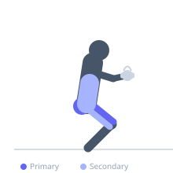
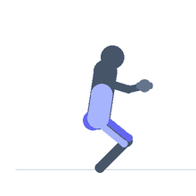

Exercise guide / Goblet Squat with Pause
Goblet Squat with Pause
The goblet squat with pause combines the upright-torso goblet squat position with a deliberate hold at the bottom. The pause eliminates the stretch-shortening reflex, forcing the quadriceps, glutes, and core to generate force from a dead stop. It is particularly effective for building squat positional strength in beginners and for improving hip mobility by using the pause position to open the hips.
Primary muscles
rectus femoris
vastus lateralis
vastus medialis
gluteus maximus
Secondary muscles
adductor magnus
erector spinae
Stabilizers
transverse abdominis
Equipment
Dumbbell (Fixed)
Optional
Kettlebell


Starting position
- Hold a dumbbell or kettlebell vertically at chest height with both hands cupping the top of the weight. Feet shoulder-width apart, toes pointed slightly out.
Setup
- Same as the goblet squat setup. The weight held at the chest acts as a counterbalance, promoting a more upright torso.
Steps
- Step 1: Hold the weight at chest height. Core braced. Push the knees out over the toes.
- Step 2: Descend to full depth — hips below knees if possible.
- Step 3: Hold the bottom position for 2–5 seconds. Use the elbows to gently push the knees outward at the bottom. Breathe steadily.
- Step 4: Drive through the entire foot to return to standing.
- Step 5: Exhale at the top.
Coaching cues
- Elbows push knees apart at the bottom
- Stay tight in the pause — don't sit and relax
- Drive up with your legs, not by leaning forward
Breathing
- Inhale before descent, breathe steadily through the pause, exhale on the ascent.
Range of motion
- Full depth. The pause is at the deepest achievable position with neutral spine.
Tempo
- 3-3-1-0 (3s descent, 3s pause, 1s ascent)
Common mistakes
- Heels rising at the bottom — caused by insufficient ankle dorsiflexion
- Lumbar rounding at depth — reduce weight or elevate heels slightly
- Relaxing the knees inward during the pause
Safety
- If heels rise, place a small plate under them to elevate until ankle mobility improves
- Start with a light dumbbell
Training
- strength: 5–8 reps
- hypertrophy: 8–12 reps
- endurance: 10–15 reps
- strength: 3–4 sets
- hypertrophy: 3–4 sets
- endurance: 2–3 sets
- Rest: {'strength': 120, 'hypertrophy': 90, 'endurance': 60}